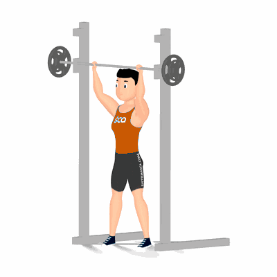

Desenvolvimento em Pé na Barra Guiada

Exercício para fortalecimento e hipertrofia dos músculos da região dos ombros. Realiza em pé, exige que o praticante possua músculos auxiliares fortalecidos, tais como: admonais, lombares, tríceps, trapézio e peitoral superior.
Ficha Técnica
Tipo: Musculação
Grupo Muscular: Ombro
Aparelho: Nenhum
Músculos: Nenhum
Como realizar
- Na posição em pé;
- Corpo posicionado no centro do aparelho e a barra à frente da linha da cabeça;
- Manter a coluna reta, segure a barra com as palmas das mãos voltadas para frente em uma distância maior que a largura dos ombros;
- Destrave a barra do suporte com os cotovelos estendidos, 5. Inicie o movimento flexionando os cotovelos para baixo, fazendo com que a barra dessa até se aproximar a parte de trás da sua cabeça;
- Retorne à posição inicial e repita os movimentos.
 RC STORE
RC STORE